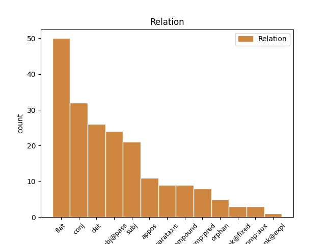
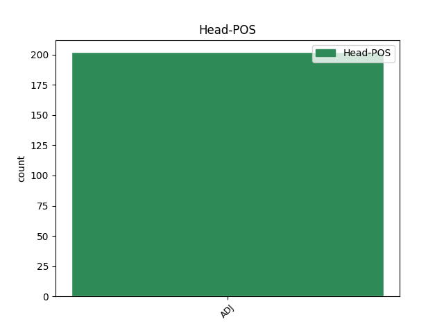
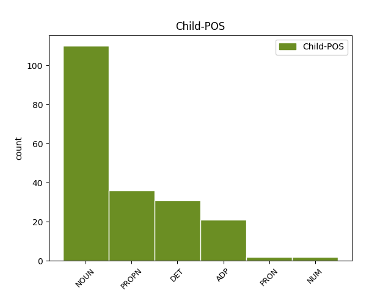

Distribution of features within this leaf



Agreement Rules sorted by frequency.
- When the dependent token is the flat multiword expression(flat) of the head token, and the head token is ADJ and the dependent token is NOUN.
1 Nakon _ _ _ _ 0 _ _ _
2 pada _ _ _ _ 0 _ _ _
3 Austro-Ugarskog austro-ugarski ADJ Agpnsgy Case=Gen|Definite=Def|Degree=Pos|Gender=Neut|Number=Sing 0 _ _ _
4 Carstva carstvo NOUN Ncnsg Case=Gen|Gender=Neut|Number=Sing 3 flat _ _
5 izumitelj _ _ _ _ 0 _ _ _
6 i _ _ _ _ 0 _ _ _
7 izum _ _ _ _ 0 _ _ _
8 pali _ _ _ _ 0 _ _ _
9 su _ _ _ _ 0 _ _ _
10 u _ _ _ _ 0 _ _ _
11 zaborav _ _ _ _ 0 _ _ _
12 . _ _ _ _ 0 _ _ _
1 Ukupnost _ _ _ _ 0 _ _ _
2 činjenica _ _ _ _ 0 _ _ _
3 koje _ _ _ _ 0 _ _ _
4 služe _ _ _ _ 0 _ _ _
5 tome _ _ _ _ 0 _ _ _
6 da _ _ _ _ 0 _ _ _
7 se _ _ _ _ 0 _ _ _
8 jedna _ _ _ _ 0 _ _ _
9 osoba _ _ _ _ 0 _ _ _
10 razlikuje _ _ _ _ 0 _ _ _
11 od _ _ _ _ 0 _ _ _
12 bilo _ _ _ _ 0 _ _ _
13 koje koji DET Pi-fsg Case=Gen|Gender=Fem|Number=Sing|PronType=Int,Rel 14 det _ _
14 druge drugi ADJ Mlofsg Case=Gen|Degree=Pos|Gender=Fem|Number=Sing 0 _ _ _
15 čini _ _ _ _ 0 _ _ _
16 njezin _ _ _ _ 0 _ _ _
17 identitet _ _ _ _ 0 _ _ _
18 . _ _ _ _ 0 _ _ _
1 To _ _ _ _ 0 _ _ _
2 One _ _ _ _ 0 _ _ _
3 mora _ _ _ _ 0 _ _ _
4 u _ _ _ _ 0 _ _ _
5 roku _ _ _ _ 0 _ _ _
6 od _ _ _ _ 0 _ _ _
7 15 _ _ _ _ 0 _ _ _
8 dana _ _ _ _ 0 _ _ _
9 Hanfi _ _ _ _ 0 _ _ _
10 dostaviti _ _ _ _ 0 _ _ _
11 dokaz _ _ _ _ 0 _ _ _
12 da _ _ _ _ 0 _ _ _
13 su _ _ _ _ 0 _ _ _
14 o _ _ _ _ 0 _ _ _
15 oduzimanju _ _ _ _ 0 _ _ _
16 odobrenja _ _ _ _ 0 _ _ _
17 obaviješteni _ _ _ _ 0 _ _ _
18 svi _ _ _ _ 0 _ _ _
19 klijenti _ _ _ _ 0 _ _ _
20 , _ _ _ _ 0 _ _ _
21 da _ _ _ _ 0 _ _ _
22 su _ _ _ _ 0 _ _ _
23 otkazane _ _ _ _ 0 _ _ _
24 pozicije _ _ _ _ 0 _ _ _
25 registracije _ _ _ _ 0 _ _ _
26 na _ _ _ _ 0 _ _ _
27 računima _ _ _ _ 0 _ _ _
28 klijenata _ _ _ _ 0 _ _ _
29 kod _ _ _ _ 0 _ _ _
30 SKDD-a _ _ _ _ 0 _ _ _
31 , _ _ _ _ 0 _ _ _
32 da _ _ _ _ 0 _ _ _
33 su _ _ _ _ 0 _ _ _
34 zatvoreni _ _ _ _ 0 _ _ _
35 posebni _ _ _ _ 0 _ _ _
36 računi _ _ _ _ 0 _ _ _
37 za _ _ _ _ 0 _ _ _
38 sredstva _ _ _ _ 0 _ _ _
39 klijenata _ _ _ _ 0 _ _ _
40 i _ _ _ _ 0 _ _ _
41 uredno _ _ _ _ 0 _ _ _
42 izvršeni izvršiti ADJ Appmpny Case=Nom|Definite=Def|Degree=Pos|Gender=Masc|Number=Plur|VerbForm=Part|Voice=Pass 0 _ _ _
43 ili _ _ _ _ 0 _ _ _
44 opozvani _ _ _ _ 0 _ _ _
45 njihovi _ _ _ _ 0 _ _ _
46 nalozi nalog NOUN Ncmpn Case=Nom|Gender=Masc|Number=Plur 42 subj@pass _ SpaceAfter=No
47 , _ _ _ _ 0 _ _ _
48 te _ _ _ _ 0 _ _ _
49 da _ _ _ _ 0 _ _ _
50 je _ _ _ _ 0 _ _ _
51 pokrenut _ _ _ _ 0 _ _ _
52 postupak _ _ _ _ 0 _ _ _
53 brisanja _ _ _ _ 0 _ _ _
54 djelatnosti _ _ _ _ 0 _ _ _
55 iz _ _ _ _ 0 _ _ _
56 sudskog _ _ _ _ 0 _ _ _
57 registra _ _ _ _ 0 _ _ _
58 nadležnog _ _ _ _ 0 _ _ _
59 trgovačkog _ _ _ _ 0 _ _ _
60 suda _ _ _ _ 0 _ _ _
61 . _ _ _ _ 0 _ _ _
1 Novi nov ADJ Agpmsny Case=Nom|Definite=Def|Degree=Pos|Gender=Masc|Number=Sing 0 _ _ _
2 Marof Marof PROPN Npmsn Case=Nom|Gender=Masc|Number=Sing 1 flat _ _
3 je _ _ _ _ 0 _ _ _
4 suvremeno _ _ _ _ 0 _ _ _
5 gradsko _ _ _ _ 0 _ _ _
6 središte _ _ _ _ 0 _ _ _
7 s _ _ _ _ 0 _ _ _
8 brzorastućim _ _ _ _ 0 _ _ _
9 i _ _ _ _ 0 _ _ _
10 profitabilnim _ _ _ _ 0 _ _ _
11 gospodarstvom _ _ _ _ 0 _ _ _
12 , _ _ _ _ 0 _ _ _
13 u _ _ _ _ 0 _ _ _
14 kojem _ _ _ _ 0 _ _ _
15 žive _ _ _ _ 0 _ _ _
16 zadovoljni _ _ _ _ 0 _ _ _
17 i _ _ _ _ 0 _ _ _
18 poduzetni _ _ _ _ 0 _ _ _
19 ljudi _ _ _ _ 0 _ _ _
20 u _ _ _ _ 0 _ _ _
21 ekološki _ _ _ _ 0 _ _ _
22 očuvanom _ _ _ _ 0 _ _ _
23 krajoliku _ _ _ _ 0 _ _ _
24 . _ _ _ _ 0 _ _ _
1 Ovaj _ _ _ _ 0 _ _ _
2 energetski _ _ _ _ 0 _ _ _
3 kontinuum _ _ _ _ 0 _ _ _
4 , _ _ _ _ 0 _ _ _
5 zbog _ _ _ _ 0 _ _ _
6 svog _ _ _ _ 0 _ _ _
7 strogog _ _ _ _ 0 _ _ _
8 kartezijanizma _ _ _ _ 0 _ _ _
9 , _ _ _ _ 0 _ _ _
10 Newton _ _ _ _ 0 _ _ _
11 ne _ _ _ _ 0 _ _ _
12 bi _ _ _ _ 0 _ _ _
13 priznao _ _ _ _ 0 _ _ _
14 , _ _ _ _ 0 _ _ _
15 jer _ _ _ _ 0 _ _ _
16 je _ _ _ _ 0 _ _ _
17 toplinu _ _ _ _ 0 _ _ _
18 , _ _ _ _ 0 _ _ _
19 kao _ _ _ _ 0 _ _ _
20 sekundarno _ _ _ _ 0 _ _ _
21 svojstvo _ _ _ _ 0 _ _ _
22 , _ _ _ _ 0 _ _ _
23 smatrao _ _ _ _ 0 _ _ _
24 nestvarnom nestvaran ADJ Agpfsiy Case=Ins|Definite=Def|Degree=Pos|Gender=Fem|Number=Sing 0 _ _ _
25 , _ _ _ _ 0 _ _ _
26 odnosno _ _ _ _ 0 _ _ _
27 prividom privid NOUN Ncmsi Case=Ins|Gender=Masc|Number=Sing 24 conj _ _
28 svodivim _ _ _ _ 0 _ _ _
29 na _ _ _ _ 0 _ _ _
30 mehanička _ _ _ _ 0 _ _ _
31 svojstva _ _ _ _ 0 _ _ _
32 . _ _ _ _ 0 _ _ _
1 Sa _ _ _ _ 0 _ _ _
2 sredstvima _ _ _ _ 0 _ _ _
3 koja _ _ _ _ 0 _ _ _
4 Grad _ _ _ _ 0 _ _ _
5 planira _ _ _ _ 0 _ _ _
6 potrošiti _ _ _ _ 0 _ _ _
7 na _ _ _ _ 0 _ _ _
8 stadione _ _ _ _ 0 _ _ _
9 u _ _ _ _ 0 _ _ _
10 svakom _ _ _ _ 0 _ _ _
11 bi _ _ _ _ 0 _ _ _
12 od _ _ _ _ 0 _ _ _
13 zagrebačkih _ _ _ _ 0 _ _ _
14 80-ak _ _ _ _ 0 _ _ _
15 kvartova _ _ _ _ 0 _ _ _
16 mogli _ _ _ _ 0 _ _ _
17 biti _ _ _ _ 0 _ _ _
18 izgrađeni izgraditi ADJ Appmpny Case=Nom|Definite=Def|Degree=Pos|Gender=Masc|Number=Plur|VerbForm=Part|Voice=Pass 0 _ _ _
19 nova _ _ _ _ 0 _ _ _
20 škola škola NOUN Ncfsn Case=Nom|Gender=Fem|Number=Sing 18 subj _ _
21 i _ _ _ _ 0 _ _ _
22 novi _ _ _ _ 0 _ _ _
23 vrtić _ _ _ _ 0 _ _ _
24 , _ _ _ _ 0 _ _ _
25 a _ _ _ _ 0 _ _ _
26 ostalo _ _ _ _ 0 _ _ _
27 bi _ _ _ _ 0 _ _ _
28 dovoljno _ _ _ _ 0 _ _ _
29 i _ _ _ _ 0 _ _ _
30 za _ _ _ _ 0 _ _ _
31 dovršetak _ _ _ _ 0 _ _ _
32 gradnje _ _ _ _ 0 _ _ _
33 Sveučilišne _ _ _ _ 0 _ _ _
34 bolnice _ _ _ _ 0 _ _ _
35 . _ _ _ _ 0 _ _ _
1 Tijekom _ _ _ _ 0 _ _ _
2 posjeta _ _ _ _ 0 _ _ _
3 Sarajevu _ _ _ _ 0 _ _ _
4 sastao _ _ _ _ 0 _ _ _
5 se _ _ _ _ 0 _ _ _
6 s _ _ _ _ 0 _ _ _
7 predsjedavajućim predsjedavajući ADJ Agpmsiy Case=Ins|Definite=Def|Degree=Pos|Gender=Masc|Number=Sing 0 _ _ _
8 Predsjedništva _ _ _ _ 0 _ _ _
9 BiH _ _ _ _ 0 _ _ _
10 Željkom Željko PROPN Npmsi Case=Ins|Gender=Masc|Number=Sing 7 appos _ _
11 Komšićem _ _ _ _ 0 _ _ _
12 , _ _ _ _ 0 _ _ _
13 svojim _ _ _ _ 0 _ _ _
14 bosanskim _ _ _ _ 0 _ _ _
15 kolegom _ _ _ _ 0 _ _ _
16 Svenom _ _ _ _ 0 _ _ _
17 Alkalajem _ _ _ _ 0 _ _ _
18 i _ _ _ _ 0 _ _ _
19 predsjednikom _ _ _ _ 0 _ _ _
20 Predstavničkog _ _ _ _ 0 _ _ _
21 doma _ _ _ _ 0 _ _ _
22 Miloradom _ _ _ _ 0 _ _ _
23 Živkovićem _ _ _ _ 0 _ _ _
24 . _ _ _ _ 0 _ _ _
1 Kao _ _ _ _ 0 _ _ _
2 što _ _ _ _ 0 _ _ _
3 pjesma _ _ _ _ 0 _ _ _
4 kaže _ _ _ _ 0 _ _ _
5 : _ _ _ _ 0 _ _ _
6 ' _ _ _ _ 0 _ _ _
7 Ličko lički ADJ Agpnsny Case=Nom|Definite=Def|Degree=Pos|Gender=Neut|Number=Sing 0 _ _ _
8 Lešće _ _ _ _ 0 _ _ _
9 , _ _ _ _ 0 _ _ _
10 Otočac Otočac PROPN Npmsn Case=Nom|Gender=Masc|Number=Sing 7 conj _ _
11 i _ _ _ _ 0 _ _ _
12 Brinje _ _ _ _ 0 _ _ _
13 mala _ _ _ _ 0 _ _ _
14 moja _ _ _ _ 0 _ _ _
15 ne _ _ _ _ 0 _ _ _
16 zaboravi _ _ _ _ 0 _ _ _
17 me _ _ _ _ 0 _ _ _
18 ' _ _ _ _ 0 _ _ _
19 , _ _ _ _ 0 _ _ _
20 siguran _ _ _ _ 0 _ _ _
21 sam _ _ _ _ 0 _ _ _
22 će _ _ _ _ 0 _ _ _
23 i _ _ _ _ 0 _ _ _
24 nama _ _ _ _ 0 _ _ _
25 ' _ _ _ _ 0 _ _ _
26 Lička _ _ _ _ 0 _ _ _
27 Kapa _ _ _ _ 0 _ _ _
28 ' _ _ _ _ 0 _ _ _
29 ostati _ _ _ _ 0 _ _ _
30 novi _ _ _ _ 0 _ _ _
31 , _ _ _ _ 0 _ _ _
32 nezaboravni _ _ _ _ 0 _ _ _
33 kamenčić _ _ _ _ 0 _ _ _
34 u _ _ _ _ 0 _ _ _
35 mozaiku _ _ _ _ 0 _ _ _
36 naših _ _ _ _ 0 _ _ _
37 biciklističkih _ _ _ _ 0 _ _ _
38 doživljaja _ _ _ _ 0 _ _ _
39 . _ _ _ _ 0 _ _ _
1 S _ _ _ _ 0 _ _ _
2 druge _ _ _ _ 0 _ _ _
3 strane _ _ _ _ 0 _ _ _
4 , _ _ _ _ 0 _ _ _
5 ono _ _ _ _ 0 _ _ _
6 što _ _ _ _ 0 _ _ _
7 je _ _ _ _ 0 _ _ _
8 Nova nov ADJ Agpfsny Case=Nom|Definite=Def|Degree=Pos|Gender=Fem|Number=Sing 0 _ _ _
9 TV TV NOUN Ncmsn Case=Nom|Gender=Masc|Number=Sing 8 compound _ _
10 napravila _ _ _ _ 0 _ _ _
11 Kukuriku _ _ _ _ 0 _ _ _
12 koaliciji _ _ _ _ 0 _ _ _
13 u _ _ _ _ 0 _ _ _
14 toj _ _ _ _ 0 _ _ _
15 istoj _ _ _ _ 0 _ _ _
16 izbornoj _ _ _ _ 0 _ _ _
17 jedinici _ _ _ _ 0 _ _ _
18 je _ _ _ _ 0 _ _ _
19 neviđena _ _ _ _ 0 _ _ _
20 i _ _ _ _ 0 _ _ _
21 sramotna _ _ _ _ 0 _ _ _
22 podvala _ _ _ _ 0 _ _ _
23 . _ _ _ _ 0 _ _ _
1 BlackBerry Blackberry PROPN Npmsn Case=Nom|Gender=Masc|Number=Sing 5 subj _ _
2 OS _ _ _ _ 0 _ _ _
3 6.0 _ _ _ _ 0 _ _ _
4 je _ _ _ _ 0 _ _ _
5 moderniji moderan ADJ Agcmsny Case=Nom|Definite=Def|Degree=Cmp|Gender=Masc|Number=Sing 0 _ _ _
6 , _ _ _ _ 0 _ _ _
7 intuitivniji _ _ _ _ 0 _ _ _
8 , _ _ _ _ 0 _ _ _
9 ali _ _ _ _ 0 _ _ _
10 i _ _ _ _ 0 _ _ _
11 dalje _ _ _ _ 0 _ _ _
12 dosta _ _ _ _ 0 _ _ _
13 nalik _ _ _ _ 0 _ _ _
14 starom _ _ _ _ 0 _ _ _
15 OS-u _ _ _ _ 0 _ _ _
16 , _ _ _ _ 0 _ _ _
17 što _ _ _ _ 0 _ _ _
18 znači _ _ _ _ 0 _ _ _
19 da _ _ _ _ 0 _ _ _
20 se _ _ _ _ 0 _ _ _
21 neće _ _ _ _ 0 _ _ _
22 dopasti _ _ _ _ 0 _ _ _
23 onima _ _ _ _ 0 _ _ _
24 koji _ _ _ _ 0 _ _ _
25 nisu _ _ _ _ 0 _ _ _
26 tehnički _ _ _ _ 0 _ _ _
27 malo _ _ _ _ 0 _ _ _
28 " _ _ _ _ 0 _ _ _
29 pismeniji _ _ _ _ 0 _ _ _
30 " _ _ _ _ 0 _ _ _
31 . _ _ _ _ 0 _ _ _
1 Političari _ _ _ _ 0 _ _ _
2 u _ _ _ _ 0 _ _ _
3 Moldaviji _ _ _ _ 0 _ _ _
4 podijeljeni _ _ _ _ 0 _ _ _
5 su _ _ _ _ 0 _ _ _
6 na _ _ _ _ 0 _ _ _
7 dvije _ _ _ _ 0 _ _ _
8 velike _ _ _ _ 0 _ _ _
9 skupine _ _ _ _ 0 _ _ _
10 : _ _ _ _ 0 _ _ _
11 proeuropski proeuropski ADJ Agpmpny Case=Nom|Definite=Def|Degree=Pos|Gender=Masc|Number=Plur 0 _ _ _
12 i _ _ _ _ 0 _ _ _
13 oni onaj DET Pd-mpn Case=Nom|Gender=Masc|Number=Plur|PronType=Dem 11 conj _ _
14 orijentirani _ _ _ _ 0 _ _ _
15 prema _ _ _ _ 0 _ _ _
16 Moskvi _ _ _ _ 0 _ _ _
17 . _ _ _ _ 0 _ _ _
1 Kad _ _ _ _ 0 _ _ _
2 je _ _ _ _ 0 _ _ _
3 postao _ _ _ _ 0 _ _ _
4 predsjednik _ _ _ _ 0 _ _ _
5 , _ _ _ _ 0 _ _ _
6 obično _ _ _ _ 0 _ _ _
7 pismo _ _ _ _ 0 _ _ _
8 koje _ _ _ _ 0 _ _ _
9 su _ _ _ _ 0 _ _ _
10 mu _ _ _ _ 0 _ _ _
11 generali _ _ _ _ 0 _ _ _
12 uputili _ _ _ _ 0 _ _ _
13 videći _ _ _ _ 0 _ _ _
14 da _ _ _ _ 0 _ _ _
15 ruši _ _ _ _ 0 _ _ _
16 ono _ _ _ _ 0 _ _ _
17 za _ _ _ _ 0 _ _ _
18 što _ _ _ _ 0 _ _ _
19 su _ _ _ _ 0 _ _ _
20 se _ _ _ _ 0 _ _ _
21 oni _ _ _ _ 0 _ _ _
22 borili _ _ _ _ 0 _ _ _
23 , _ _ _ _ 0 _ _ _
24 proglasio _ _ _ _ 0 _ _ _
25 je _ _ _ _ 0 _ _ _
26 DRŽAVNIM državni ADJ Agpmsiy Case=Ins|Definite=Def|Degree=Pos|Gender=Masc|Number=Sing 0 _ _ _
27 UDAROM udar NOUN Ncmsi Case=Ins|Gender=Masc|Number=Sing 26 comp:aux _ _
28 i _ _ _ _ 0 _ _ _
29 bavljenjem _ _ _ _ 0 _ _ _
30 politikom _ _ _ _ 0 _ _ _
31 . _ _ _ _ 0 _ _ _
1 Dvodijelni _ _ _ _ 0 _ _ _
2 kupaći _ _ _ _ 0 _ _ _
3 kostim _ _ _ _ 0 _ _ _
4 ( _ _ _ _ 0 _ _ _
5 na _ _ _ _ 0 _ _ _
6 vezanje _ _ _ _ 0 _ _ _
7 i _ _ _ _ 0 _ _ _
8 brazilski _ _ _ _ 0 _ _ _
9 model _ _ _ _ 0 _ _ _
10 ) _ _ _ _ 0 _ _ _
11 bit _ _ _ _ 0 _ _ _
12 će _ _ _ _ 0 _ _ _
13 najhrabriji _ _ _ _ 0 _ _ _
14 izbor _ _ _ _ 0 _ _ _
15 ovo _ _ _ _ 0 _ _ _
16 ljeto _ _ _ _ 0 _ _ _
17 svake _ _ _ _ 0 _ _ _
18 ELFS _ _ _ _ 0 _ _ _
19 djevojke _ _ _ _ 0 _ _ _
20 koja _ _ _ _ 0 _ _ _
21 na _ _ _ _ 0 _ _ _
22 nijednoj _ _ _ _ 0 _ _ _
23 plaži _ _ _ _ 0 _ _ _
24 neće _ _ _ _ 0 _ _ _
25 proći _ _ _ _ 0 _ _ _
26 nezapaženo _ _ _ _ 0 _ _ _
27 , _ _ _ _ 0 _ _ _
28 monokini monokini ADJ Agpmsny Case=Nom|Definite=Def|Degree=Pos|Gender=Masc|Number=Sing 0 _ _ _
29 kupaći _ _ _ _ 0 _ _ _
30 kostim kostim NOUN Ncmsn Case=Nom|Gender=Masc|Number=Sing 28 appos _ _
31 idealan _ _ _ _ 0 _ _ _
32 je _ _ _ _ 0 _ _ _
33 za _ _ _ _ 0 _ _ _
34 ELFS _ _ _ _ 0 _ _ _
35 party _ _ _ _ 0 _ _ _
36 djevojke _ _ _ _ 0 _ _ _
37 , _ _ _ _ 0 _ _ _
38 dok _ _ _ _ 0 _ _ _
39 će _ _ _ _ 0 _ _ _
40 jednodijelni _ _ _ _ 0 _ _ _
41 klasični _ _ _ _ 0 _ _ _
42 kupaći _ _ _ _ 0 _ _ _
43 kostim _ _ _ _ 0 _ _ _
44 biti _ _ _ _ 0 _ _ _
45 odabir _ _ _ _ 0 _ _ _
46 svih _ _ _ _ 0 _ _ _
47 djevojaka _ _ _ _ 0 _ _ _
48 koje _ _ _ _ 0 _ _ _
49 vole _ _ _ _ 0 _ _ _
50 uživati _ _ _ _ 0 _ _ _
51 u _ _ _ _ 0 _ _ _
52 skrivenim _ _ _ _ 0 _ _ _
53 pogledima _ _ _ _ 0 _ _ _
54 svih _ _ _ _ 0 _ _ _
55 muškaraca _ _ _ _ 0 _ _ _
56 . _ _ _ _ 0 _ _ _
1 Nakon _ _ _ _ 0 _ _ _
2 što _ _ _ _ 0 _ _ _
3 se _ _ _ _ 0 _ _ _
4 Sovjetski _ _ _ _ 0 _ _ _
5 savez _ _ _ _ 0 _ _ _
6 slomio _ _ _ _ 0 _ _ _
7 zbog _ _ _ _ 0 _ _ _
8 unutrašnjih _ _ _ _ 0 _ _ _
9 problema _ _ _ _ 0 _ _ _
10 i _ _ _ _ 0 _ _ _
11 sputavanja _ _ _ _ 0 _ _ _
12 slobode _ _ _ _ 0 _ _ _
13 Amerika _ _ _ _ 0 _ _ _
14 je _ _ _ _ 0 _ _ _
15 ostala ostali ADJ Agpfsny Case=Nom|Definite=Def|Degree=Pos|Gender=Fem|Number=Sing 0 _ _ _
16 jedina _ _ _ _ 0 _ _ _
17 supersila supersila NOUN Ncfsn Case=Nom|Gender=Fem|Number=Sing 15 comp:pred _ SpaceAfter=No
18 , _ _ _ _ 0 _ _ _
19 pa _ _ _ _ 0 _ _ _
20 sad _ _ _ _ 0 _ _ _
21 nameće _ _ _ _ 0 _ _ _
22 kapitalistički _ _ _ _ 0 _ _ _
23 fundamentalizam _ _ _ _ 0 _ _ _
24 i _ _ _ _ 0 _ _ _
25 ideologiju _ _ _ _ 0 _ _ _
26 slobodnog _ _ _ _ 0 _ _ _
27 tržišta _ _ _ _ 0 _ _ _
28 , _ _ _ _ 0 _ _ _
29 tobože _ _ _ _ 0 _ _ _
30 neoliberalizam _ _ _ _ 0 _ _ _
31 . _ _ _ _ 0 _ _ _
1 Mirjana Mirjana PROPN Npfsn Case=Nom|Gender=Fem|Number=Sing 3 subj@pass _ _
2 Marković _ _ _ _ 0 _ _ _
3 optužena optužiti ADJ Appfsny Case=Nom|Definite=Def|Degree=Pos|Gender=Fem|Number=Sing|VerbForm=Part|Voice=Pass 0 _ _ _
4 za _ _ _ _ 0 _ _ _
5 zloporabu _ _ _ _ 0 _ _ _
6 dužnosti _ _ _ _ 0 _ _ _
1 Kao _ _ _ _ 0 _ _ _
2 što _ _ _ _ 0 _ _ _
3 pjesma _ _ _ _ 0 _ _ _
4 kaže _ _ _ _ 0 _ _ _
5 : _ _ _ _ 0 _ _ _
6 ' _ _ _ _ 0 _ _ _
7 Ličko lički ADJ Agpnsny Case=Nom|Definite=Def|Degree=Pos|Gender=Neut|Number=Sing 0 _ _ _
8 Lešće lešće PROPN Npnsn Case=Nom|Gender=Neut|Number=Sing 7 compound _ SpaceAfter=No
9 , _ _ _ _ 0 _ _ _
10 Otočac _ _ _ _ 0 _ _ _
11 i _ _ _ _ 0 _ _ _
12 Brinje _ _ _ _ 0 _ _ _
13 mala _ _ _ _ 0 _ _ _
14 moja _ _ _ _ 0 _ _ _
15 ne _ _ _ _ 0 _ _ _
16 zaboravi _ _ _ _ 0 _ _ _
17 me _ _ _ _ 0 _ _ _
18 ' _ _ _ _ 0 _ _ _
19 , _ _ _ _ 0 _ _ _
20 siguran _ _ _ _ 0 _ _ _
21 sam _ _ _ _ 0 _ _ _
22 će _ _ _ _ 0 _ _ _
23 i _ _ _ _ 0 _ _ _
24 nama _ _ _ _ 0 _ _ _
25 ' _ _ _ _ 0 _ _ _
26 Lička _ _ _ _ 0 _ _ _
27 Kapa _ _ _ _ 0 _ _ _
28 ' _ _ _ _ 0 _ _ _
29 ostati _ _ _ _ 0 _ _ _
30 novi _ _ _ _ 0 _ _ _
31 , _ _ _ _ 0 _ _ _
32 nezaboravni _ _ _ _ 0 _ _ _
33 kamenčić _ _ _ _ 0 _ _ _
34 u _ _ _ _ 0 _ _ _
35 mozaiku _ _ _ _ 0 _ _ _
36 naših _ _ _ _ 0 _ _ _
37 biciklističkih _ _ _ _ 0 _ _ _
38 doživljaja _ _ _ _ 0 _ _ _
39 . _ _ _ _ 0 _ _ _
1 Kultura kultura NOUN Ncfsn Case=Nom|Gender=Fem|Number=Sing 7 parataxis _ _
2 i _ _ _ _ 0 _ _ _
3 društvo _ _ _ _ 0 _ _ _
4 : _ _ _ _ 0 _ _ _
5 Rumunjski _ _ _ _ 0 _ _ _
6 dvorac _ _ _ _ 0 _ _ _
7 vraćen vratiti ADJ Appmsnn Case=Nom|Definite=Ind|Degree=Pos|Gender=Masc|Number=Sing|VerbForm=Part|Voice=Pass 0 _ _ _
8 u _ _ _ _ 0 _ _ _
9 vlasništvo _ _ _ _ 0 _ _ _
10 Habsburga _ _ _ _ 0 _ _ _
1 " _ _ _ _ 0 _ _ _
2 Kad _ _ _ _ 0 _ _ _
3 sam _ _ _ _ 0 _ _ _
4 došao _ _ _ _ 0 _ _ _
5 u _ _ _ _ 0 _ _ _
6 klub _ _ _ _ 0 _ _ _
7 , _ _ _ _ 0 _ _ _
8 upoznao _ _ _ _ 0 _ _ _
9 sam _ _ _ _ 0 _ _ _
10 čovjeka _ _ _ _ 0 _ _ _
11 koji _ _ _ _ 0 _ _ _
12 se _ _ _ _ 0 _ _ _
13 zove _ _ _ _ 0 _ _ _
14 Frenk _ _ _ _ 0 _ _ _
15 i _ _ _ _ 0 _ _ _
16 koji koji DET Pi-msn Case=Nom|Gender=Masc|Number=Sing|PronType=Int,Rel 18 subj _ _
17 je _ _ _ _ 0 _ _ _
18 zadužen zadužiti ADJ Appmsnn Case=Nom|Definite=Ind|Degree=Pos|Gender=Masc|Number=Sing|VerbForm=Part|Voice=Pass 0 _ _ _
19 za _ _ _ _ 0 _ _ _
20 pronalazak _ _ _ _ 0 _ _ _
21 stana _ _ _ _ 0 _ _ _
22 za _ _ _ _ 0 _ _ _
23 igrača _ _ _ _ 0 _ _ _
24 . _ _ _ _ 0 _ _ _
1 Ramkovski _ _ _ _ 0 _ _ _
2 , _ _ _ _ 0 _ _ _
3 bivši _ _ _ _ 0 _ _ _
4 vlasnik _ _ _ _ 0 _ _ _
5 televizijske _ _ _ _ 0 _ _ _
6 postaje _ _ _ _ 0 _ _ _
7 A1 _ _ _ _ 0 _ _ _
8 , _ _ _ _ 0 _ _ _
9 četiriju _ _ _ _ 0 _ _ _
10 novina _ _ _ _ 0 _ _ _
11 i _ _ _ _ 0 _ _ _
12 drugih _ _ _ _ 0 _ _ _
13 poduzeća _ _ _ _ 0 _ _ _
14 , _ _ _ _ 0 _ _ _
15 osuđen _ _ _ _ 0 _ _ _
16 je _ _ _ _ 0 _ _ _
17 na _ _ _ _ 0 _ _ _
18 Kaznenom kazneni ADJ Agpmsly Case=Loc|Definite=Def|Degree=Pos|Gender=Masc|Number=Sing 0 _ _ _
19 sudu _ _ _ _ 0 _ _ _
20 u u ADP Sl Case=Loc 18 flat _ _
21 Skoplju _ _ _ _ 0 _ _ _
22 14. _ _ _ _ 0 _ _ _
23 ožujka _ _ _ _ 0 _ _ _
24 na _ _ _ _ 0 _ _ _
25 13 _ _ _ _ 0 _ _ _
26 godina _ _ _ _ 0 _ _ _
27 zatvora _ _ _ _ 0 _ _ _
28 zbog _ _ _ _ 0 _ _ _
29 pranja _ _ _ _ 0 _ _ _
30 novca _ _ _ _ 0 _ _ _
31 , _ _ _ _ 0 _ _ _
32 kriminalne _ _ _ _ 0 _ _ _
33 zavjere _ _ _ _ 0 _ _ _
34 , _ _ _ _ 0 _ _ _
35 zloporabe _ _ _ _ 0 _ _ _
36 položaja _ _ _ _ 0 _ _ _
37 i _ _ _ _ 0 _ _ _
38 utaje _ _ _ _ 0 _ _ _
39 poreza _ _ _ _ 0 _ _ _
40 ; _ _ _ _ 0 _ _ _
41 19 _ _ _ _ 0 _ _ _
42 suučesnika _ _ _ _ 0 _ _ _
43 dobilo _ _ _ _ 0 _ _ _
44 je _ _ _ _ 0 _ _ _
45 zatvorske _ _ _ _ 0 _ _ _
46 kazne _ _ _ _ 0 _ _ _
47 u _ _ _ _ 0 _ _ _
48 trajanju _ _ _ _ 0 _ _ _
49 od _ _ _ _ 0 _ _ _
50 dvije _ _ _ _ 0 _ _ _
51 do _ _ _ _ 0 _ _ _
52 sedam _ _ _ _ 0 _ _ _
53 godina _ _ _ _ 0 _ _ _
54 . _ _ _ _ 0 _ _ _
1 Osim _ _ _ _ 0 _ _ _
2 toga _ _ _ _ 0 _ _ _
3 imamo _ _ _ _ 0 _ _ _
4 u _ _ _ _ 0 _ _ _
5 planu _ _ _ _ 0 _ _ _
6 ići _ _ _ _ 0 _ _ _
7 sa _ _ _ _ 0 _ _ _
8 peticijom _ _ _ _ 0 _ _ _
9 registra _ _ _ _ 0 _ _ _
10 HR. _ _ _ _ 0 _ _ _
11 branitelja _ _ _ _ 0 _ _ _
12 koju _ _ _ _ 0 _ _ _
13 pozdravljaju _ _ _ _ 0 _ _ _
14 svi _ _ _ _ 0 _ _ _
15 diljem _ _ _ _ 0 _ _ _
16 Lijepe lijep ADJ Agpfsgy Case=Gen|Definite=Def|Degree=Pos|Gender=Fem|Number=Sing 0 _ _ _
17 naše naš DET Ps1fsg Case=Gen|Gender=Fem|Number=Sing|Number[psor]=Plur|Person=1|Poss=Yes|PronType=Prs 16 unk@fixed _ SpaceAfter=No
18 , _ _ _ _ 0 _ _ _
19 naravno _ _ _ _ 0 _ _ _
20 osim _ _ _ _ 0 _ _ _
21 onih _ _ _ _ 0 _ _ _
22 koji _ _ _ _ 0 _ _ _
23 su _ _ _ _ 0 _ _ _
24 svoja _ _ _ _ 0 _ _ _
25 prava _ _ _ _ 0 _ _ _
26 stekli _ _ _ _ 0 _ _ _
27 na _ _ _ _ 0 _ _ _
28 nezakonit _ _ _ _ 0 _ _ _
29 način _ _ _ _ 0 _ _ _
30 i _ _ _ _ 0 _ _ _
31 onih _ _ _ _ 0 _ _ _
32 koji _ _ _ _ 0 _ _ _
33 su _ _ _ _ 0 _ _ _
34 im _ _ _ _ 0 _ _ _
35 ih _ _ _ _ 0 _ _ _
36 davali _ _ _ _ 0 _ _ _
37 . _ _ _ _ 0 _ _ _
1 Petra _ _ _ _ 0 _ _ _
2 Maroja _ _ _ _ 0 _ _ _
3 manekenka _ _ _ _ 0 _ _ _
4 je _ _ _ _ 0 _ _ _
5 i _ _ _ _ 0 _ _ _
6 glumica _ _ _ _ 0 _ _ _
7 koju _ _ _ _ 0 _ _ _
8 smo _ _ _ _ 0 _ _ _
9 gledali _ _ _ _ 0 _ _ _
10 u _ _ _ _ 0 _ _ _
11 sapunici _ _ _ _ 0 _ _ _
12 Sve _ _ _ _ 0 _ _ _
13 će _ _ _ _ 0 _ _ _
14 biti _ _ _ _ 0 _ _ _
15 dobro _ _ _ _ 0 _ _ _
16 u _ _ _ _ 0 _ _ _
17 ulozi _ _ _ _ 0 _ _ _
18 novinarke _ _ _ _ 0 _ _ _
19 Kristine _ _ _ _ 0 _ _ _
20 Kovač _ _ _ _ 0 _ _ _
21 te _ _ _ _ 0 _ _ _
22 u _ _ _ _ 0 _ _ _
23 reality reality ADJ Agpmsly Case=Loc|Definite=Def|Degree=Pos|Gender=Masc|Number=Sing 0 _ _ _
24 showu show NOUN Ncmsl Case=Loc|Gender=Masc|Number=Sing 23 unk@fixed _ _
25 Farma _ _ _ _ 0 _ _ _
26 . _ _ _ _ 0 _ _ _
1 Prvi _ _ _ _ 0 _ _ _
2 je _ _ _ _ 0 _ _ _
3 stopa _ _ _ _ 0 _ _ _
4 investiranja _ _ _ _ 0 _ _ _
5 a _ _ _ _ 0 _ _ _
6 drugi drugi ADJ Mlomsn Case=Nom|Degree=Pos|Gender=Masc|Number=Sing 0 _ _ _
7 učešće učešće NOUN Ncnsn Case=Nom|Gender=Neut|Number=Sing 6 orphan _ orig_deprel=root
8 međunarodne _ _ _ _ 0 _ _ _
9 razmjene _ _ _ _ 0 _ _ _
10 . _ _ _ _ 0 _ _ _
1 Činjenica _ _ _ _ 0 _ _ _
2 da _ _ _ _ 0 _ _ _
3 je _ _ _ _ 0 _ _ _
4 svaka _ _ _ _ 0 _ _ _
5 dagerotipija _ _ _ _ 0 _ _ _
6 unikatna _ _ _ _ 0 _ _ _
7 , _ _ _ _ 0 _ _ _
8 danas _ _ _ _ 0 _ _ _
9 , _ _ _ _ 0 _ _ _
10 za _ _ _ _ 0 _ _ _
11 razliku _ _ _ _ 0 _ _ _
12 od _ _ _ _ 0 _ _ _
13 prošlih _ _ _ _ 0 _ _ _
14 vremena _ _ _ _ 0 _ _ _
15 , _ _ _ _ 0 _ _ _
16 može _ _ _ _ 0 _ _ _
17 joj _ _ _ _ 0 _ _ _
18 pridodati _ _ _ _ 0 _ _ _
19 posebnu _ _ _ _ 0 _ _ _
20 vrijednost _ _ _ _ 0 _ _ _
21 nečeg nešto PRON Pi3n-g Case=Gen|Gender=Neut|PronType=Ind 22 det _ _
22 dragocjenog dragocjen ADJ Agpnsgy Case=Gen|Definite=Def|Degree=Pos|Gender=Neut|Number=Sing 0 _ _ _
23 . _ _ _ _ 0 _ _ _
1 Natjecanje _ _ _ _ 0 _ _ _
2 je _ _ _ _ 0 _ _ _
3 održano _ _ _ _ 0 _ _ _
4 u _ _ _ _ 0 _ _ _
5 veleslalomu _ _ _ _ 0 _ _ _
6 , _ _ _ _ 0 _ _ _
7 u _ _ _ _ 0 _ _ _
8 tri _ _ _ _ 0 _ _ _
9 muške _ _ _ _ 0 _ _ _
10 dobne _ _ _ _ 0 _ _ _
11 kategorije _ _ _ _ 0 _ _ _
12 i _ _ _ _ 0 _ _ _
13 jednoj jedan NUM Mlcfsl Case=Loc|Gender=Fem|Number=Sing|NumType=Card 14 orphan _ orig_deprel=nummod
14 ženskoj ženski ADJ Agpfsly Case=Loc|Definite=Def|Degree=Pos|Gender=Fem|Number=Sing 0 _ _ _
15 . _ _ _ _ 0 _ _ _
1 Mirjana _ _ _ _ 0 _ _ _
2 Marinković _ _ _ _ 0 _ _ _
3 iz _ _ _ _ 0 _ _ _
4 Pridvorja _ _ _ _ 0 _ _ _
5 kaže _ _ _ _ 0 _ _ _
6 da _ _ _ _ 0 _ _ _
7 su _ _ _ _ 0 _ _ _
8 joj _ _ _ _ 0 _ _ _
9 vukovi _ _ _ _ 0 _ _ _
10 uzeli _ _ _ _ 0 _ _ _
11 psa _ _ _ _ 0 _ _ _
12 koji _ _ _ _ 0 _ _ _
13 je _ _ _ _ 0 _ _ _
14 bio _ _ _ _ 0 _ _ _
15 pred _ _ _ _ 0 _ _ _
16 kućom _ _ _ _ 0 _ _ _
17 i _ _ _ _ 0 _ _ _
18 odnijeli _ _ _ _ 0 _ _ _
19 do _ _ _ _ 0 _ _ _
20 škole _ _ _ _ 0 _ _ _
21 koju _ _ _ _ 0 _ _ _
22 pohađaju _ _ _ _ 0 _ _ _
23 djeca _ _ _ _ 0 _ _ _
24 od od ADP Sg Case=Gen 25 orphan _ orig_deprel=case
25 prvog prvi ADJ Mlomsg Case=Gen|Degree=Pos|Gender=Masc|Number=Sing 0 _ _ _
26 do _ _ _ _ 0 _ _ _
27 četvrtog _ _ _ _ 0 _ _ _
28 razreda _ _ _ _ 0 _ _ _
29 . _ _ _ _ 0 _ _ _
Disagree Examples:
1 Međutim _ _ _ _ 0 _ _ _
2 , _ _ _ _ 0 _ _ _
3 stabilnost _ _ _ _ 0 _ _ _
4 vlade _ _ _ _ 0 _ _ _
5 dovedena dovesti ADJ Appfsny Case=Nom|Definite=Def|Degree=Pos|Gender=Fem|Number=Sing|VerbForm=Part|Voice=Pass 0 _ _ _
6 je _ _ _ _ 0 _ _ _
7 u u ADP Sa Case=Acc 5 compound _ _
8 pitanje _ _ _ _ 0 _ _ _
9 budući _ _ _ _ 0 _ _ _
10 da _ _ _ _ 0 _ _ _
11 se _ _ _ _ 0 _ _ _
12 očekuje _ _ _ _ 0 _ _ _
13 kako _ _ _ _ 0 _ _ _
14 će _ _ _ _ 0 _ _ _
15 manjinska _ _ _ _ 0 _ _ _
16 albanska _ _ _ _ 0 _ _ _
17 stranka _ _ _ _ 0 _ _ _
18 unutar _ _ _ _ 0 _ _ _
19 vladajuće _ _ _ _ 0 _ _ _
20 koalicije _ _ _ _ 0 _ _ _
21 zatražiti _ _ _ _ 0 _ _ _
22 prijevremene _ _ _ _ 0 _ _ _
23 izbore _ _ _ _ 0 _ _ _
24 . _ _ _ _ 0 _ _ _
1 Ministarstvo _ _ _ _ 0 _ _ _
2 unutarnjih _ _ _ _ 0 _ _ _
3 poslova _ _ _ _ 0 _ _ _
4 priopćilo _ _ _ _ 0 _ _ _
5 je _ _ _ _ 0 _ _ _
6 kako _ _ _ _ 0 _ _ _
7 pretpostavlja _ _ _ _ 0 _ _ _
8 da _ _ _ _ 0 _ _ _
9 je _ _ _ _ 0 _ _ _
10 jedan _ _ _ _ 0 _ _ _
11 od _ _ _ _ 0 _ _ _
12 petero _ _ _ _ 0 _ _ _
13 osumnjičenih osumnjičen ADJ Agpmpgy Case=Gen|Definite=Def|Degree=Pos|Gender=Masc|Number=Plur 0 _ _ _
14 , _ _ _ _ 0 _ _ _
15 Rijad Rijad PROPN Npmsn Case=Nom|Gender=Masc|Number=Sing 13 appos _ _
16 Rustempašić _ _ _ _ 0 _ _ _
17 , _ _ _ _ 0 _ _ _
18 vođa _ _ _ _ 0 _ _ _
19 . _ _ _ _ 0 _ _ _
1 Iako _ _ _ _ 0 _ _ _
2 je _ _ _ _ 0 _ _ _
3 taj _ _ _ _ 0 _ _ _
4 trend _ _ _ _ 0 _ _ _
5 u _ _ _ _ 0 _ _ _
6 opadanju _ _ _ _ 0 _ _ _
7 , _ _ _ _ 0 _ _ _
8 još _ _ _ _ 0 _ _ _
9 je _ _ _ _ 0 _ _ _
10 dug _ _ _ _ 0 _ _ _
11 put _ _ _ _ 0 _ _ _
12 do _ _ _ _ 0 _ _ _
13 njegova _ _ _ _ 0 _ _ _
14 potpunog _ _ _ _ 0 _ _ _
15 nestanka _ _ _ _ 0 _ _ _
16 " _ _ _ _ 0 _ _ _
17 , _ _ _ _ 0 _ _ _
18 rekla _ _ _ _ 0 _ _ _
19 je _ _ _ _ 0 _ _ _
20 Anica _ _ _ _ 0 _ _ _
21 Tomić _ _ _ _ 0 _ _ _
22 Stojkovska _ _ _ _ 0 _ _ _
23 iz _ _ _ _ 0 _ _ _
24 koalicije _ _ _ _ 0 _ _ _
25 Svi sav ADJ Agpmpny Case=Nom|Definite=Def|Degree=Pos|Gender=Masc|Number=Plur 0 _ _ _
26 za _ _ _ _ 0 _ _ _
27 poštena _ _ _ _ 0 _ _ _
28 suđenja suđenje NOUN Ncnpa Case=Acc|Gender=Neut|Number=Plur 25 compound _ SpaceAfter=No
29 . _ _ _ _ 0 _ _ _
1 Stotinu _ _ _ _ 0 _ _ _
2 četrnaest _ _ _ _ 0 _ _ _
3 godina godina NOUN Ncfpg Case=Gen|Gender=Fem|Number=Plur 19 subj _ _
4 od _ _ _ _ 0 _ _ _
5 rođenja _ _ _ _ 0 _ _ _
6 jednog _ _ _ _ 0 _ _ _
7 od _ _ _ _ 0 _ _ _
8 najvećih _ _ _ _ 0 _ _ _
9 balkanskih _ _ _ _ 0 _ _ _
10 pisaca _ _ _ _ 0 _ _ _
11 , _ _ _ _ 0 _ _ _
12 dobitnika _ _ _ _ 0 _ _ _
13 Nobelove _ _ _ _ 0 _ _ _
14 nagrade _ _ _ _ 0 _ _ _
15 , _ _ _ _ 0 _ _ _
16 Ive _ _ _ _ 0 _ _ _
17 Andrića _ _ _ _ 0 _ _ _
18 , _ _ _ _ 0 _ _ _
19 obilježeno obilježiti ADJ Appnsny Case=Nom|Definite=Def|Degree=Pos|Gender=Neut|Number=Sing|VerbForm=Part|Voice=Pass 0 _ _ _
20 je _ _ _ _ 0 _ _ _
21 u _ _ _ _ 0 _ _ _
22 ponedjeljak _ _ _ _ 0 _ _ _
23 ( _ _ _ _ 0 _ _ _
24 9. _ _ _ _ 0 _ _ _
25 listopad _ _ _ _ 0 _ _ _
26 ) _ _ _ _ 0 _ _ _
27 u _ _ _ _ 0 _ _ _
28 njegovu _ _ _ _ 0 _ _ _
29 rodnom _ _ _ _ 0 _ _ _
30 gradu _ _ _ _ 0 _ _ _
31 Travniku _ _ _ _ 0 _ _ _
32 u _ _ _ _ 0 _ _ _
33 Bosni _ _ _ _ 0 _ _ _
34 i _ _ _ _ 0 _ _ _
35 Hercegovini _ _ _ _ 0 _ _ _
36 književnom _ _ _ _ 0 _ _ _
37 raspravom _ _ _ _ 0 _ _ _
38 i _ _ _ _ 0 _ _ _
39 javnim _ _ _ _ 0 _ _ _
40 čitanjem _ _ _ _ 0 _ _ _
41 dijelova _ _ _ _ 0 _ _ _
42 njegovih _ _ _ _ 0 _ _ _
43 knjiga _ _ _ _ 0 _ _ _
44 . _ _ _ _ 0 _ _ _
1 Neki _ _ _ _ 0 _ _ _
2 su _ _ _ _ 0 _ _ _
3 mediji _ _ _ _ 0 _ _ _
4 , _ _ _ _ 0 _ _ _
5 uključujući _ _ _ _ 0 _ _ _
6 i _ _ _ _ 0 _ _ _
7 dnevne _ _ _ _ 0 _ _ _
8 novine _ _ _ _ 0 _ _ _
9 Danas _ _ _ _ 0 _ _ _
10 , _ _ _ _ 0 _ _ _
11 osudili _ _ _ _ 0 _ _ _
12 ovaj _ _ _ _ 0 _ _ _
13 događaj _ _ _ _ 0 _ _ _
14 i _ _ _ _ 0 _ _ _
15 ocijenili _ _ _ _ 0 _ _ _
16 ga _ _ _ _ 0 _ _ _
17 kao _ _ _ _ 0 _ _ _
18 " _ _ _ _ 0 _ _ _
19 cirkus _ _ _ _ 0 _ _ _
20 " _ _ _ _ 0 _ _ _
21 , _ _ _ _ 0 _ _ _
22 dok _ _ _ _ 0 _ _ _
23 su _ _ _ _ 0 _ _ _
24 drugi drugi ADJ Mlompn Case=Nom|Degree=Pos|Gender=Masc|Number=Plur 0 _ _ _
25 , _ _ _ _ 0 _ _ _
26 poput poput ADP Sg Case=Gen 24 parataxis _ _
27 Kurira _ _ _ _ 0 _ _ _
28 , _ _ _ _ 0 _ _ _
29 izvijestili _ _ _ _ 0 _ _ _
30 kako _ _ _ _ 0 _ _ _
31 su _ _ _ _ 0 _ _ _
32 cipele _ _ _ _ 0 _ _ _
33 bile _ _ _ _ 0 _ _ _
34 talijanske _ _ _ _ 0 _ _ _
35 i _ _ _ _ 0 _ _ _
36 koštale _ _ _ _ 0 _ _ _
37 oko _ _ _ _ 0 _ _ _
38 100 _ _ _ _ 0 _ _ _
39 eura _ _ _ _ 0 _ _ _
40 . _ _ _ _ 0 _ _ _